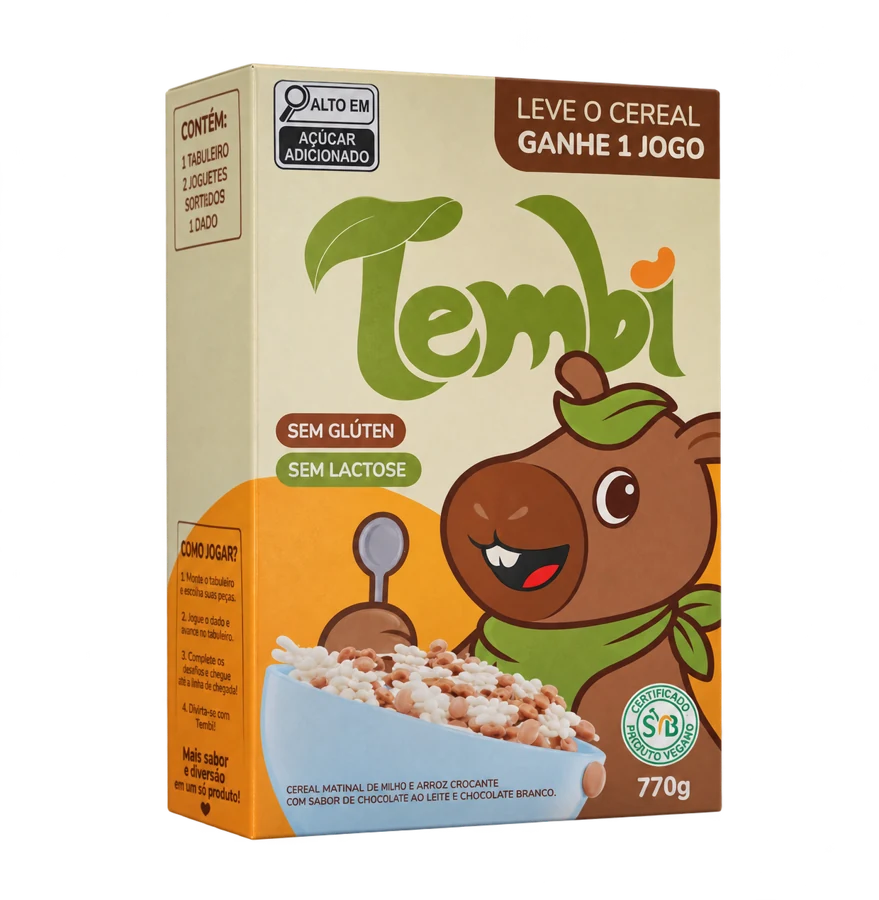
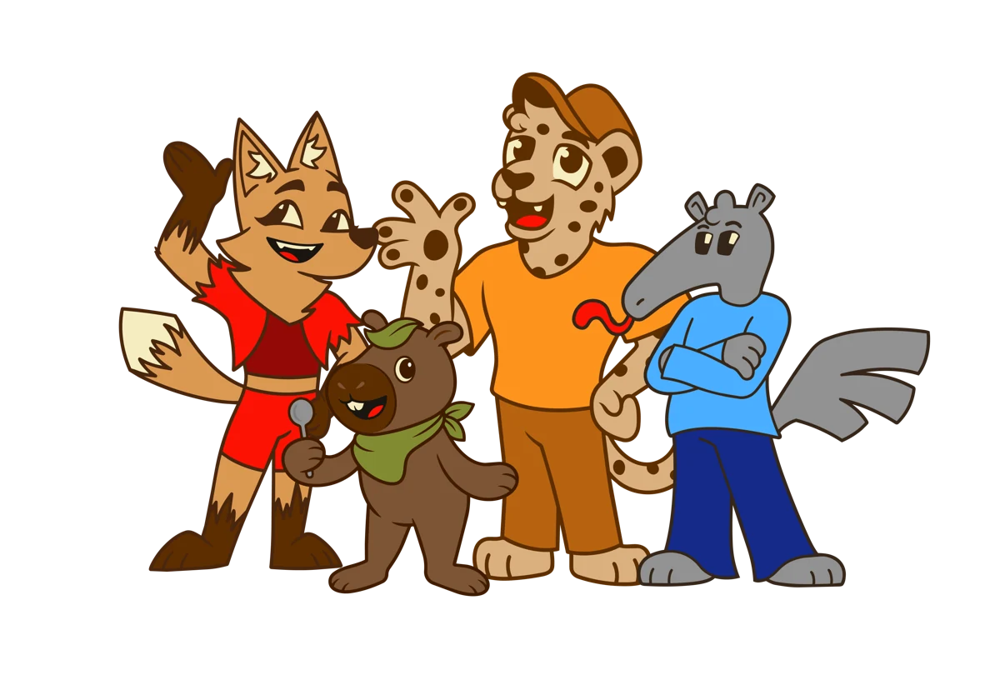
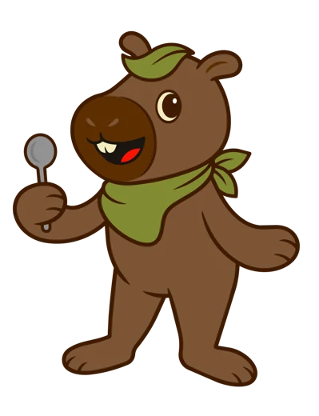
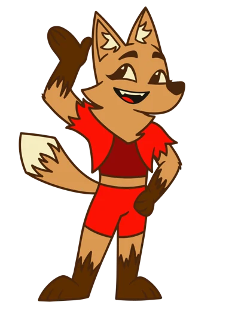
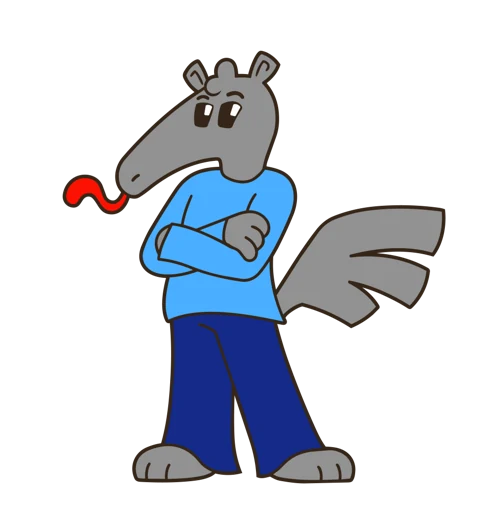
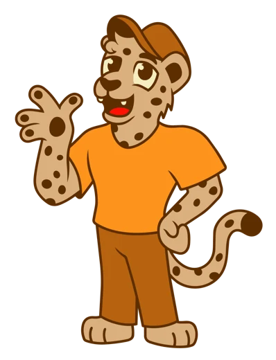

Cereal matinal Tembí
Cereal de milho e arroz crocante, com sabor de chocolate ao leite e chocolate branco. Caixa de 770 g.
- Sem glúten e sem lactose
- Produto vegano certificado
- A parte de trás da caixa é um tabuleiro
Tembí é uma marca de cereais matinais e leites vegetais criada para crianças e para quem quer comer sem preocupações. Aqui a embalagem também vira brincadeira.
Conheça o jogo da caixa
“Aqui você come sem preocupações.”
O nome Tembí vem de tembi’u, palavra de origem tupi ligada a alimento e comida. Da escolha do nome às cores e aos personagens, tudo na marca parte do Brasil.
Palavras indígenas, uma paleta inspirada na flora brasileira e mascotes da nossa fauna dão à Tembí uma cara própria.
Apresentar às crianças uma alimentação à base de vegetais, com a variedade de frutas, verduras e outros alimentos do país como inspiração.
A proposta vai além do público infantil: também acolhe quem tem intolerâncias, alergias ou evita ingredientes de origem animal.
As duas embalagens foram pensadas para funcionar sozinhas, mas ficam melhores juntas na mesma compra.
Cereal de milho e arroz crocante, com sabor de chocolate ao leite e chocolate branco. Caixa de 770 g.
Embalagem de formato convencional com um diferencial na tampa: um compartimento esférico guarda uma miniatura surpresa de um dos mascotes. Ele foi pensado para complementar a caixa de cereal: juntos formam um café da manhã vegetal completo, e levar os dois para casa amplia o jogo, com mais mascotes para jogar.
Depois do café da manhã, vire a caixa do cereal: o verso é um circuito com casas de surpresas e desafios. O jogo existe para despertar a curiosidade das crianças e a conexão delas com a fauna e a flora brasileiras: é aprender enquanto se diverte.
Ganha quem chegar primeiro à linha de CHEGADA!
Com os dois peões que acompanham o cereal já dá para jogar. Para ter mais jogadores, cada leite vegetal traz outro mascote, e como são sortidos, podem vir repetidos.
Quatro animais da fauna brasileira dão vida ao jogo. Cada um tem uma forma e uma cor de peão de tabuleiro que mostram sua personalidade, e a pelagem original do bicho foi mantida.


Capivara, mascote oficial
Círculo verdeAmigável e animada. Tem alergia a glúten.

Loba-guará
Triângulo vermelhoExtrovertida e competitiva. É vegetariana.

Tamanduá-bandeira
Retângulo azulIntrospectivo e tranquilo. Simplesmente gosta de comer saudável.

Onça-pintada
Quadrado amareloFirme e gentil. Tem intolerância à lactose.
A paleta nasceu de elementos brasileiros. Para textos corridos, a marca usa a Nunito, uma fonte sem serifa de leitura fácil. O logotipo é um desenho próprio, com pontas angulares, mas fluidas, e elementos de folha e caju que lembram a matéria-prima vegetal.